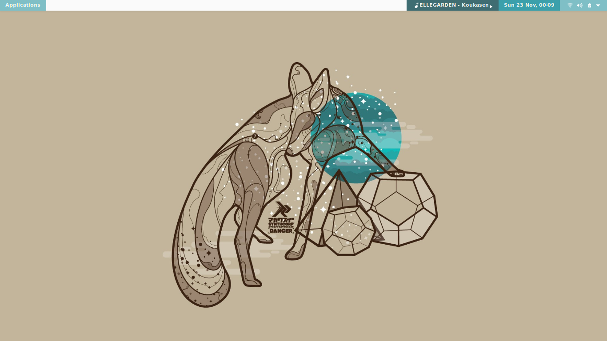
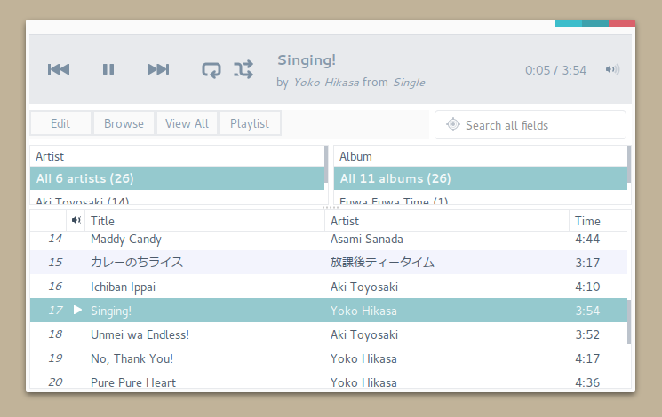
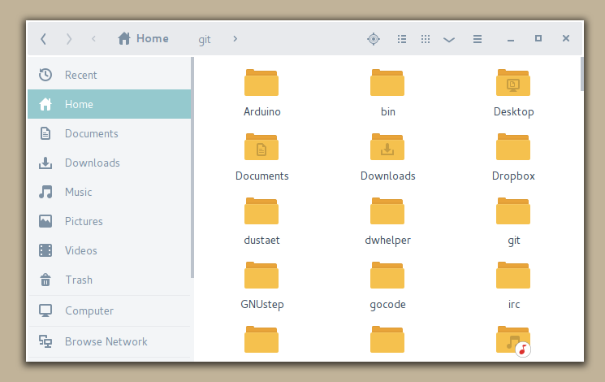
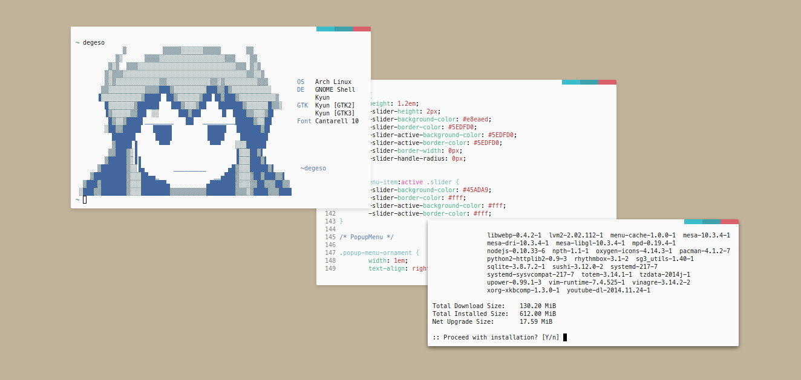
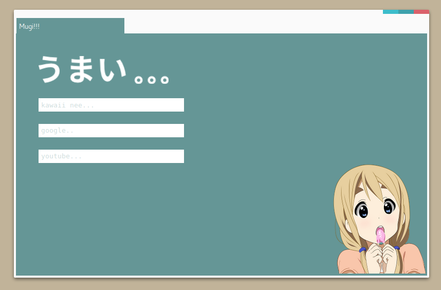

Next
GTK and Metacity Theme
More than flat theme for GTK3 and Metacity theme for Gnome Shell



Next
Firefox and Userchrome
Contains firefox user style and index page for new tab

Tsumugi Kotobuki
this firefox user style and home index theme are my tribute to Mugi from K-On for being a cutest entity alive (IMO)
wanna go up?